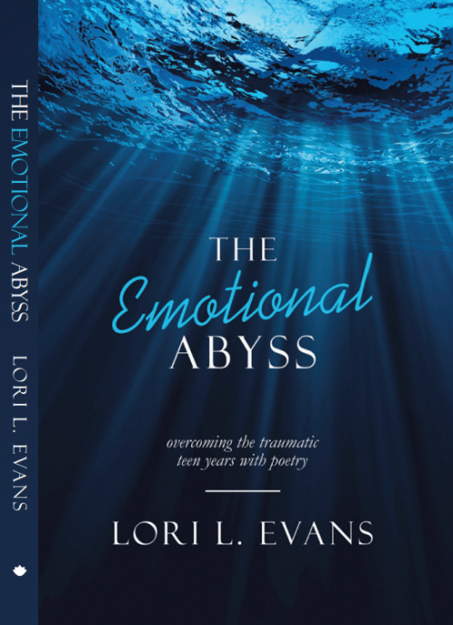

The Emotional Abyss

Available Now!
The Emotional Abyss is a mixture of autobiography, poetry, and self-help.
The Emotional Abyss is not the typical poetry, autobiography, nor compilation. Instead, it serves as a living time capsule—an unique glimpse into the psyche of a popular, creative, incredibly insecure, self-loathing teenage girl—as she fumbles through life and matures into a confident, self-loving woman full of wisdom.
On the surface, The Emotional Abyss appears as indulgent teenage ramblings. However, once you dive into the insightful lessons and antidotes, the possibility of positive change emerges.